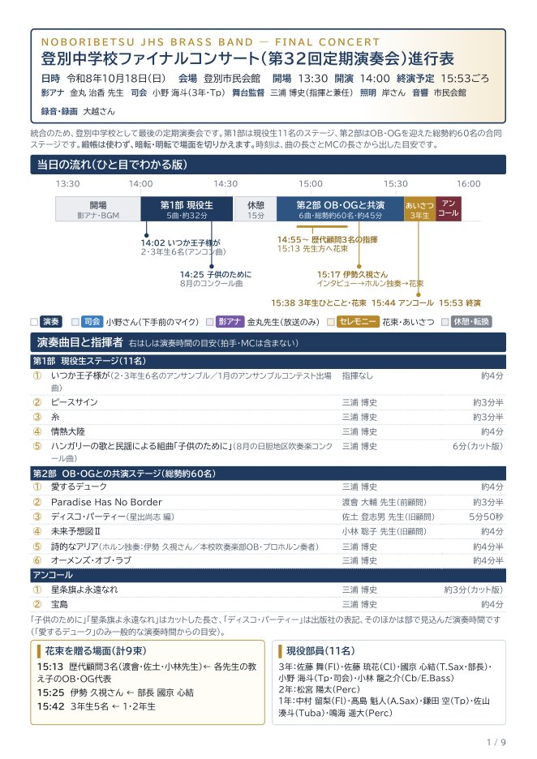
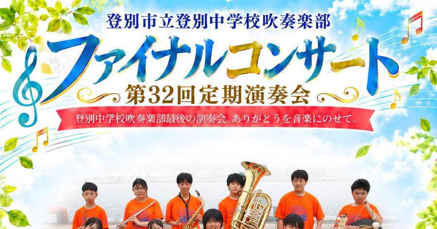
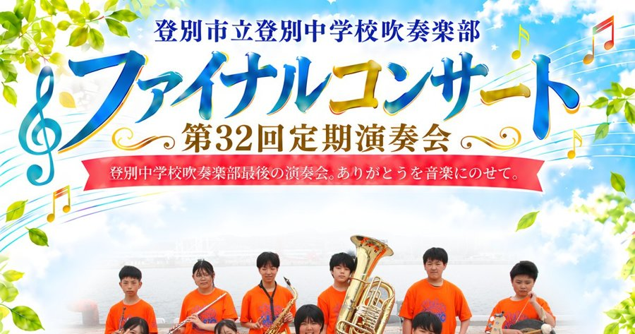
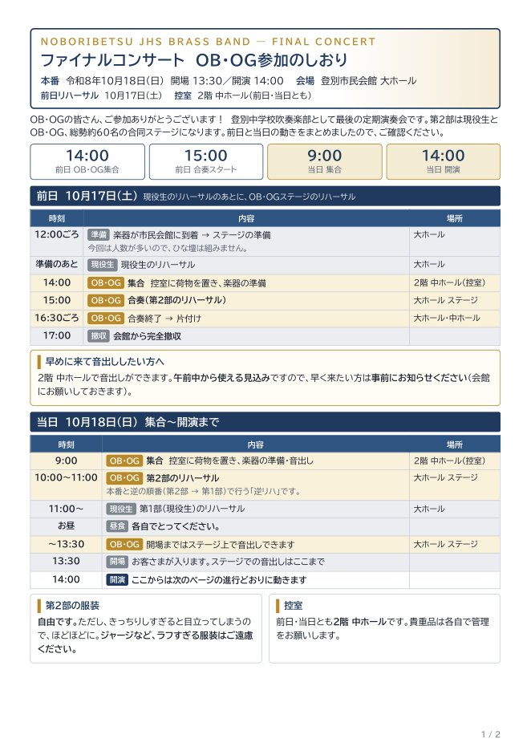
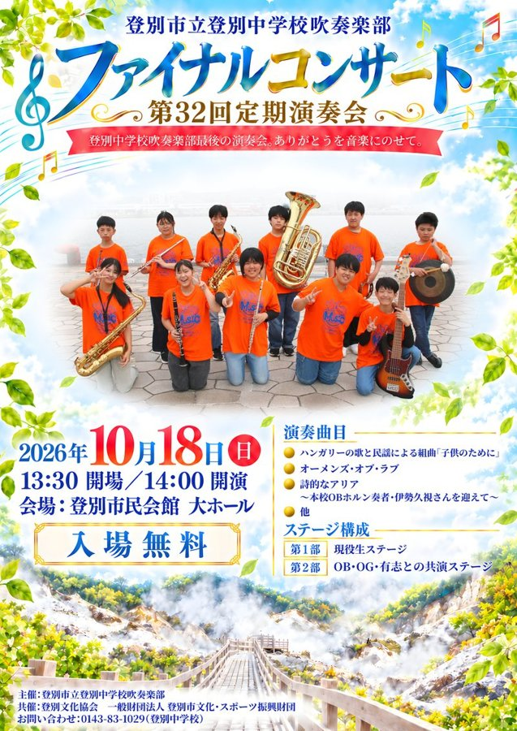
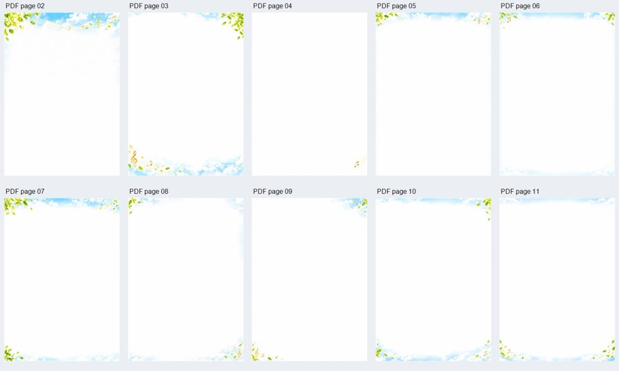
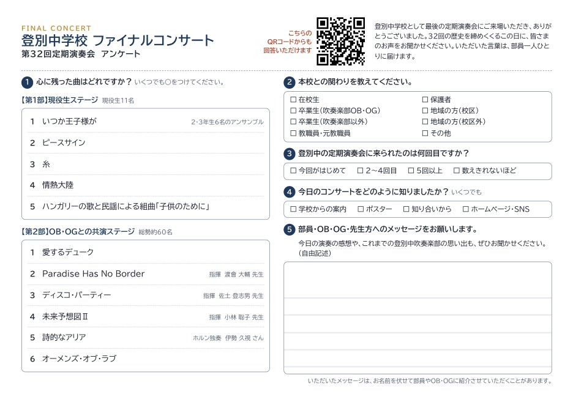

01 ／ 今回のメイン
進行表（全9ページ）
当日の流れ・曲目と指揮者・係分担に加えて、影アナ原稿と司会原稿まで1冊に。
AI：対話しながらまとめ、別のAIが採点（80→89→96→97点）
人：何度もダメ出しして仕上げ
人：何度もダメ出しして仕上げ
登別中学校吹奏楽部 ファイナルコンサート（第32回定期演奏会・令和8年10月18日）の準備で、AIと一緒に作ったものを並べました。
どれも、作ったあとに人が読んで、直して、使っています。

当日の流れ・曲目と指揮者・係分担に加えて、影アナ原稿と司会原稿まで1冊に。

練習日程・曲目・参考音源をまとめたページ。グループLINEからここへ案内しました。




